Text-image to video generation aims to synthesize a video highly aligned with the given image and text conditions. However, existing methods fail to deal with the situation when the given image and text are unpaired, i.e., the events they describe are timestamped separately, where the condition image may be at an arbitrary position in the final video, rather than the first frame. This raises the challenge to reason about the intrinsic connections between the two modalities. To address this, we propose ReasonDiff for unpaired text-image to video generation. Concretely, we leverage the strong reasoning capabilities of a multi-modal large language model (MLLM) to analyze the unpaired image and text condition, generating a plausible per-frame narrative to temporally align them. The MLLM will deduce the most likely position of the condition image within the final generated video. We further introduce an AlignFormer module, which predicts the latent for each frame based on both the condition image and the per-frame narrative guidance. These reasoning enhanced latents are then fused with the initial noisy latents in the diffusion model to guide the generation process. Extensive experiments and ablation studies demonstrate that ReasonDiff significantly improves video generation quality under unpaired text-image conditions.
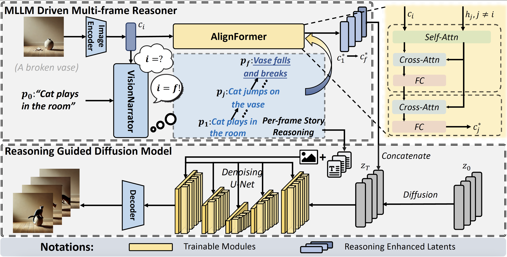
Framework of the proposed ReasonDiff model, which mainly consists of two components. For given unpaired image and text conditions, MLLM Driven Multi-frame Reasoner will analyze them and reason out the whole scene, frame-wise, to align the two modalities temporally. This reasoning enhanced information will then be sent into the diffusion model and fused with the initial noisy latents to guide the generation process. The detailed architecture of the proposed AlignFormer module in MLLM Driven Multi-frame Reasoner is illustrated in the upper-right region.
| "A cat plays in the room." | (The cat broke the vase) | "A person opens the window." | (The wind will blow the pages) | |
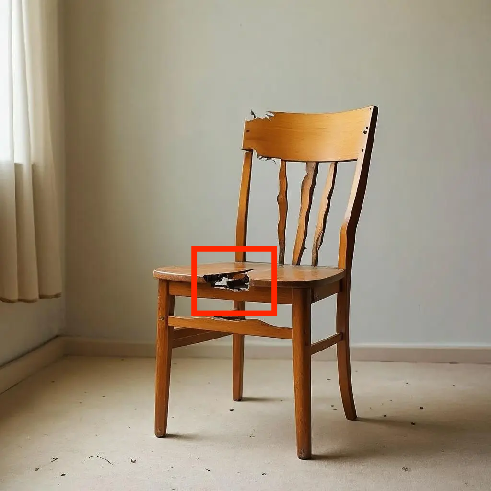 |
||||
| "A dog walking on the road.." | (The dog will walk past the bicycle.) | "A cat plays in the room.." | (The chair is broken by the cat.) | |
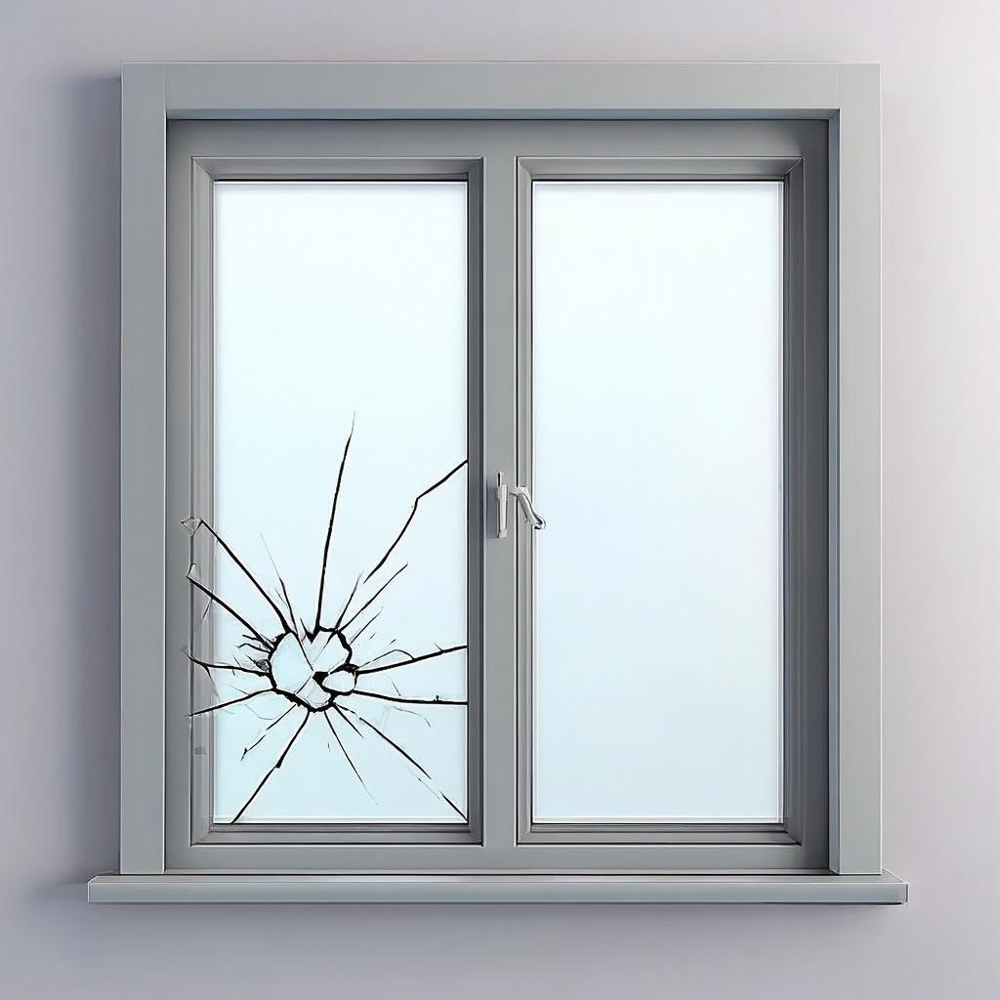 |
||||
| "A soccer flying.." | (The window is broken by the soccer.) | "A dog plays in the room.." | (The dog broken the vase.) | |
| "Car running on the road.." | (The car runns past the dog.) | "A man whistles.." | (The dog runs happily to the man.) | |
| Condition Image A person opens the window. | "ReasonDiff" | |||
| SparseCtrl | I2VGen-XL | Dynamicrafter | ConsistI2V | |
| SVD | LTX-Video | CogVideoX | Wan2.1 | |
| Condition Image A soccer flying | ReasonDiff | |||
| SparseCtrl | I2VGen-XL | Dynamicrafter | ConsistI2V | |
| SVD | LTX-Video | CogVideoX | Wan2.1 | |
| Condition Image A soccer flying | Wan2.1 | Wan2.1+ReasonDiff | ||
| Condition Image A person opens the window | Wan2.1 | Wan2.1+ReasonDiff |
In this section, we show that ReaonDiff module is compatible with other video generation framework, i.e., Wan2.1, and can generate much longer videos (in this example, 81 frames). From the results we can see that ReasonDiff has successfully integrated reasoning capabilities into Wan2.1 model and generate videos that are coherent with both the text and image conditions, even though they are unpaired.
| Condition Image A cat plays in the room | ReasonDiff | |||
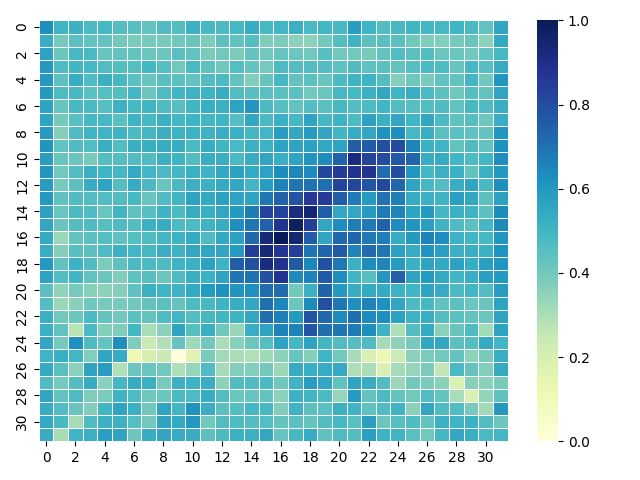 |
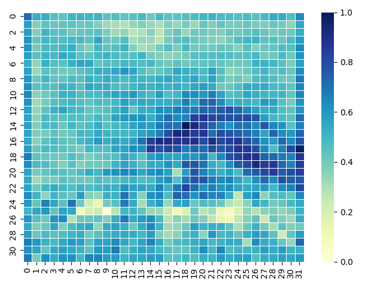 |
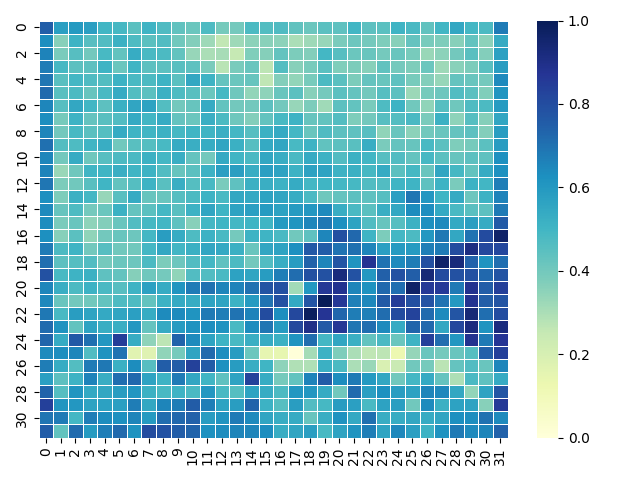 |
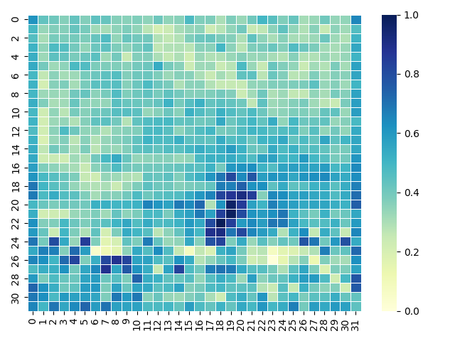 |
|
| ReasonDiff Frame 0 | Frame 5 | Frame 10 | Frame 15 | |
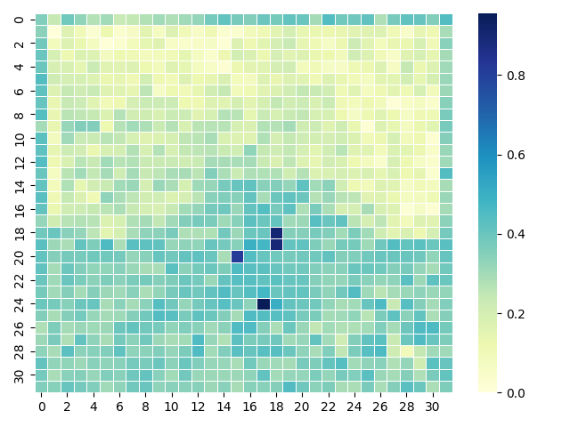 |
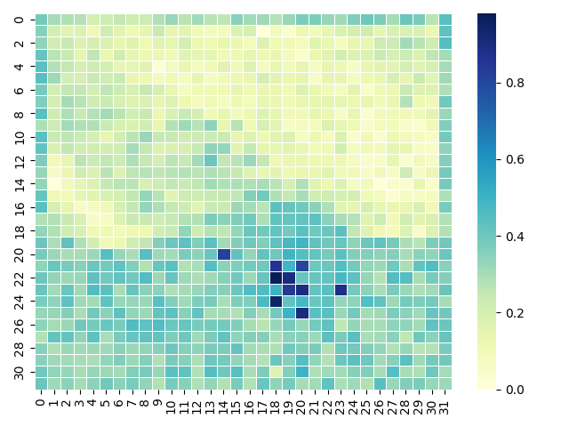 |
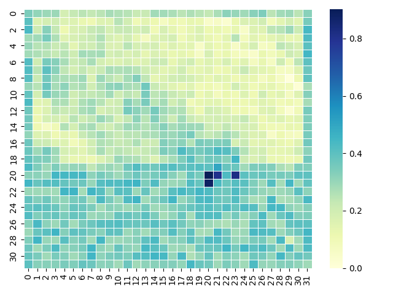 |
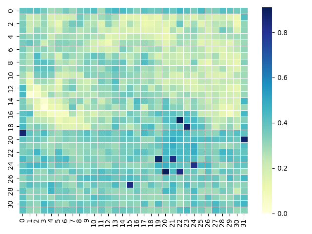 |
|
| Dynamicrafter Frame 0 | Frame 5 | Frame 10 | Frame 15 |
In this section, we illustrate the learned temporal reasoning capabilities by visualizing the attention map corresponding to the inferred key action breaking in the vase-cat example. Specifically, we compute the attention scores between the CLIP-encoded embedding of the word breaking and the hidden states of the video frames in the second layer of the UNet. These attention maps are then averaged to obtain a frame-wise attention distribution. From the results of ReasonDiff we can observe that, the area with high attention score roughly follows the interaction of the vase and the cat. In contrast to the baseline model Dynamicrafter, ReasonDiff successfully captures the temporal interaction between the two entities (i.e., the vase and the cat), rather than merely rendering a static composition. This highlights the model's ability to infer dynamic causal relationships from unpaired text-image inputs.